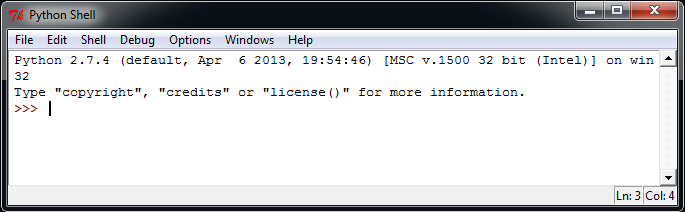
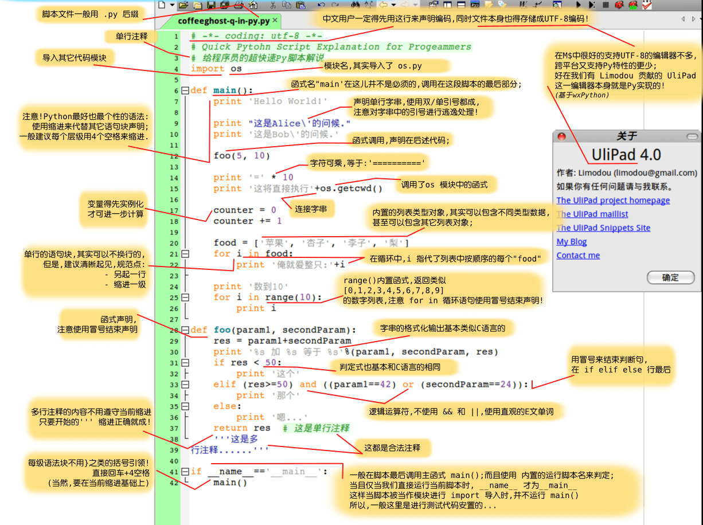

Python Basic Syntax
Python has many similarities with languages such as Perl, C, and Java. However, there are also some differences.
In this chapter, we will learn Python's basic syntax to help you quickly learn Python programming.
First Python Program
Interactive Programming
Interactive programming does not require creating a script file; code is written in the interactive mode of the Python interpreter.
On Linux, you only need to enter the Python command in the command line to start interactive programming. The prompt window is as follows:
Python 2.7.6 (default, Sep 9 2014, 15:04:36)
[GCC 4.2.1 Compatible Apple LLVM 6.0 (clang-600.0.39)] on darwin
Type "help", "copyright", "credits" or "license" for more information.
>>>
On Windows, the interactive programming client is installed when Python is installed. The prompt window is as follows:

Enter the following text at the Python prompt, then press Enter to see the result:
>>> print ("Hello, Python!")
In Python 2.7.6, the output of the above example is as follows:
Hello, Python!
Script Programming
Start executing the script by calling the interpreter with the script argument, until the script finishes. After the script is executed, the interpreter is no longer valid.
Let's write a simple Python script program. All Python files will have the extension.pyas the extension. Copy the following source code into the test.py file.
print ("Hello, Python!")
Here, assume you have set the PATH variable of the Python interpreter. Run the program with the following command:
$ python test.py
Output result:
Hello, Python!
Let's try another way to execute a Python script. Modify the test.py file as follows:
Example
print ("Hello, Python!")
Here, assume your Python interpreter is in the /usr/bin directory. Use the following command to execute the script:
$ chmod +x test.py # 脚本文件添加可执行权限 $ ./test.py
Output result:
Hello, Python!
Using Python3.x's print function in Python2.x
If the Python2.x version wants to use the print function of Python3.x, you can import the__future__package, which disables the Python2.x print statement and uses the Python3.x print function:
Example
>>> print list # python2.x print statement
['a', 'b', 'c']
>>> from __future__ import print_function # import the __future__ package
>>> print list # The Python2.x print statement is disabled; using it causes an error
File "<stdin>", line 1
print list
^
SyntaxError: invalid syntax
>>> print (list) # Use the Python3.x print function
['a', 'b', 'c']
>>>
Many compatibility features of Python3.x and Python2.x can be__future__imported through this package.
Python Identifiers
In Python, identifiers consist of letters, digits, and underscores.
In Python, all identifiers can include English letters, digits, and underscores (_), but cannot start with a digit.
Identifiers in Python are case-sensitive.
Identifiers starting with an underscore have special meaning. Those starting with a single underscore_foorepresent class attributes that cannot be directly accessed and must be accessed through the interface provided by the class; they cannot befrom xxx import *imported.
Those starting with a double underscore__foorepresent private members of a class. Those starting and ending with a double underscore__foo__represent identifiers dedicated to special methods in Python, such as__init__()represents the constructor of a class.
Python can display multiple statements on the same line by using semicolons;to separate them, for example:
>>> print ('hello');print ('runoob');
hello
runoob
Python Reserved Words
The following list shows the reserved words in Python. These reserved words cannot be used as constants, variables, or any other identifier names.
All Python keywords contain only lowercase letters.
| and | exec | not |
| assert | finally | or |
| break | for | pass |
| class | from | |
| continue | global | raise |
| def | if | return |
| del | import | try |
| elif | in | while |
| else | is | with |
| except | lambda | yield |
Lines and Indentation
The biggest difference between learning Python and other languages is that Python code blocks do not use braces{}to control classes, functions, and other logical judgments. The most distinctive feature of Python is using indentation to write modules.
The amount of whitespace in indentation is variable, but all code block statements must contain the same amount of indentation whitespace. This must be strictly enforced.
The following example uses four spaces for indentation:
Example
print ("True")
else:
print ("False")
The following code will cause an execution error:
Example
# -*- coding: UTF-8 -*-
# File name: test.py
if True:
print ("Answer")
print ("True")
else:
print ("Answer")
# No strict indentation, an error will be reported during execution
print ("False")
After executing the above code, the following error message will appear:
File "test.py", line 11
print ("False")
^
IndentationError: unindent does not match any outer indentation level
IndentationError: unindent does not match any outer indentation levelThe error indicates that you used inconsistent indentation, some with tab key indentation and some with space indentation. Just make them consistent.
If it isIndentationError: unexpected indenterror, the Python compiler is telling you "Hi, buddy, there's a formatting problem in your file; it might be that tabs and spaces are not aligned.", so Python is very strict about formatting.
Therefore, in Python code blocks, you must use the same number of leading indentation spaces.
It is recommended that you use at each indentation levela single tab 或 two spaces 或 four spaces, and remember not to mix them.
Multi-line Statements
In Python, a new line is generally used as the terminator of a statement.
However, we can use a slash (\) to display a one-line statement over multiple lines, as follows:
total = item_one + \
item_two + \
item_three
If a statement contains brackets [], {}, or (), there is no need to use a multi-line connector. Example:
days = ['Monday', 'Tuesday', 'Wednesday',
'Thursday', 'Friday']
Python Quotes
Python can use single quotes ('), double quotes ("), and triple quotes (''' 或 """) to represent strings. The beginning and end of the quotes must be of the same type.
Triple quotes can consist of multiple lines, a quick syntax for writing multi-line text, often used for docstrings, and treated as comments at specific locations in a file.
word = 'word' sentence = "这是一个句子。" paragraph = """这是一个段落。 包含了多个语句"""
Python Comments
In Python, single-line comments start with#at the beginning.
Example
# -*- coding: UTF-8 -*-
# File name: test.py
# First comment
print ("Hello, Python!") # Second comment
Output result:
Hello, Python!
Comments can be at the end of a statement or expression line:
name = "Runoob" # 这里的内容是一个注释
In Python, multi-line comments use three single quotes'''or three double quotes"""。
Example
# -*- coding: UTF-8 -*-
# File name: test.py
'''
This is a multi-line comment using single quotes.
This is a multi-line comment using single quotes.
This is a multi-line comment using single quotes.
'''
"""
This is a multi-line comment using double quotes.
This is a multi-line comment using double quotes.
This is a multi-line comment using double quotes.
"""
Python Blank Lines
Blank lines separate functions or class methods, indicating the start of a new block of code. A blank line is also used between the class and function entry to highlight the start of the function entry.
Blank lines are different from code indentation; blank lines are not part of Python syntax. If you don't insert blank lines, the Python interpreter will not error when running. However, blank lines serve to separate two sections of code with different functions or meanings, making it easier to maintain or refactor code later.
Remember: blank lines are also part of the program code.
Waiting for User Input
The following program waits for user input after execution, and exits after pressing Enter:
#!/usr/bin/python
# -*- coding: UTF-8 -*-
raw_input("按下 enter 键退出，其他任意键显示...\n")
In the above code,\nimplements a line break. Once the user presses the Enter key to exit, other keys are displayed.
Multiple Statements on the Same Line
Python can use multiple statements on the same line, separated by semicolons (;). Here is a simple example:#!/usr/bin/python import sys; x = 'runoob'; sys.stdout.write(x + '\n')
After executing the above code, the output result is:
$ python test.py runoob
print Output
By default, print outputs with a newline. To print without a newline, add a comma at the end of the variable.,。
Example
# -*- coding: UTF-8 -*-
x="a"
y="b"
# Newline output
print x
print y
print '---------'
# No newline output
print x,
print y,
# No newline output
print x,y
The result of the above example is:
a b --------- a b a b
For more details, refer to:Python2 and Python3 print without newline
Multiple Statements Form a Code Group
A group of statements with the same indentation forms a code block, which we call a code group.
Compound statements like if, while, def, and class start with a keyword in the first line and end with a colon (:). The one or more lines after that line form a code group.
We call the first line together with the following code group a clause.
As in the following example:
if expression : suite elif expression : suite else : suite
Command Line Arguments
Many programs can perform operations to view basic information. Python can use-hparameters to view help information for each parameter:
$ python -h usage: python [option] ... [-c cmd | -m mod | file | -] [arg] ... Options and arguments (and corresponding environment variables): -c cmd : program passed in as string (terminates option list) -d : debug output from parser (also PYTHONDEBUG=x) -E : ignore environment variables (such as PYTHONPATH) -h : print this help message and exit [ etc. ]
When executing Python in script form, we can receive parameters input from the command line. For specific usage, refer toPython command line arguments。
Additional extensions
younger
129***3390@qq.com
To pass parameters to a script, use the sys module. Edit test.py as follows
sys.argv is used to get command line arguments
Run the command, the execution result is:
sys.argv[0] Represents the path of the file itself, and the parameters start fromsys.argv[1]onward.
younger
129***3390@qq.com
qing
282***728@qq.com
Reference address
The purpose of the first line of a script language is to specify which executable program you want to use to run the code in this file. That's all.
#!/usr/bin/python: Tells the operating system to invoke the python interpreter under /usr/bin when executing this script;
#!/usr/bin/env python(Recommended): This usage is to prevent the operating system user from not having python installed in the default /usr/bin path. When the system sees this line, it will first search for the python installation path in the env settings, then invoke the interpreter program under the corresponding path to complete the operation.
#!/usr/bin/pythonIt is equivalent to hard-coding the python path;
#!/usr/bin/env pythonIt will look for the python directory in the environment settings,This approach is recommended
qing
282***728@qq.com
Reference address
TRER
234***9fs9@qq.com
A Python basic syntax diagram seen on the internet:

TRER
234***9fs9@qq.com